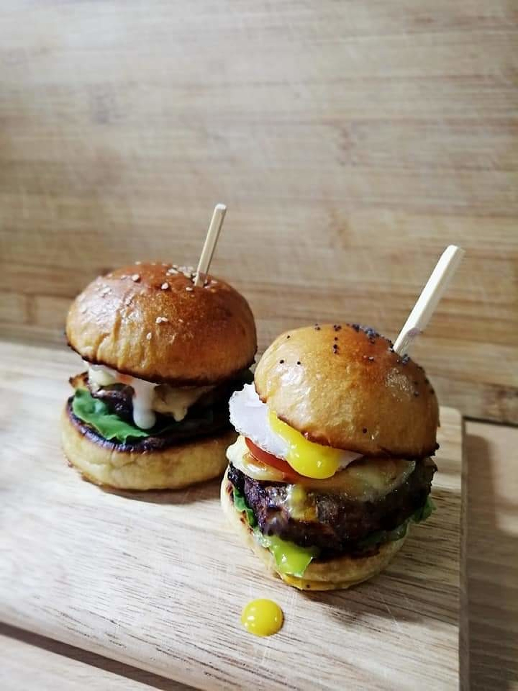
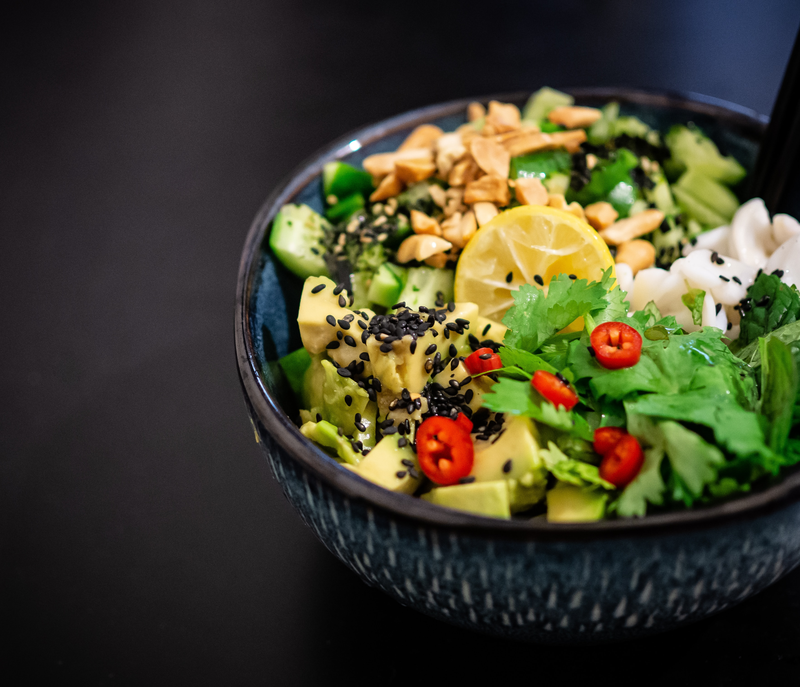
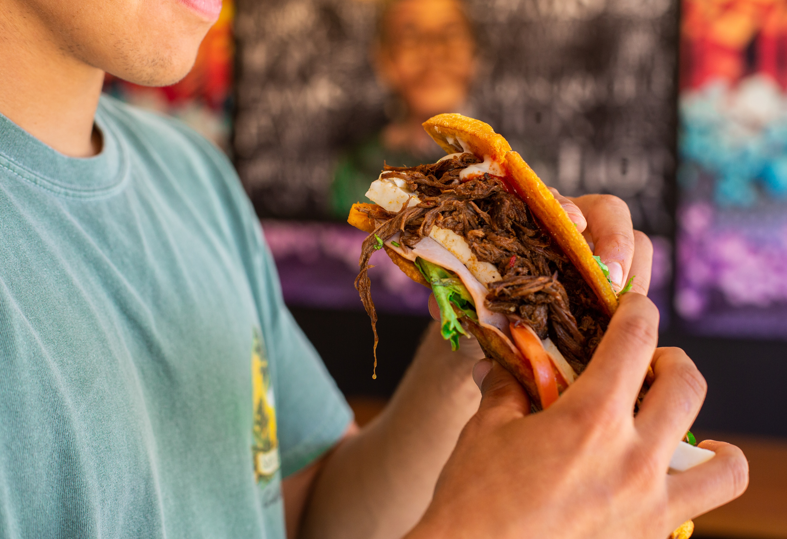
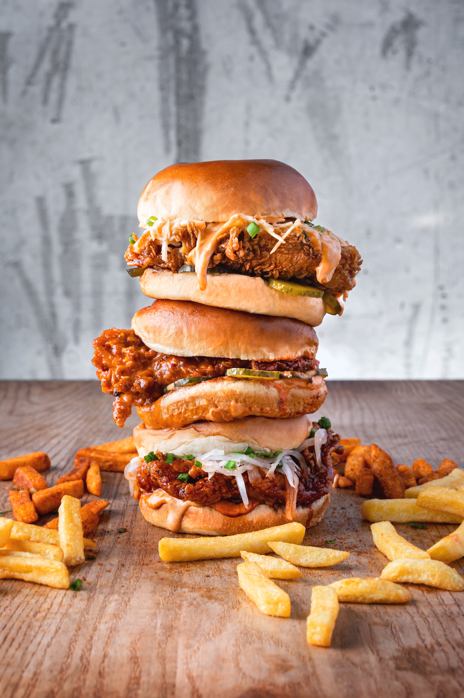
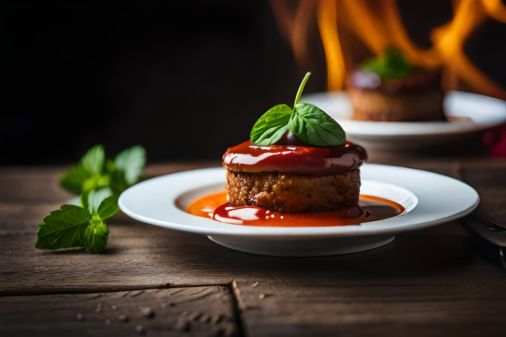
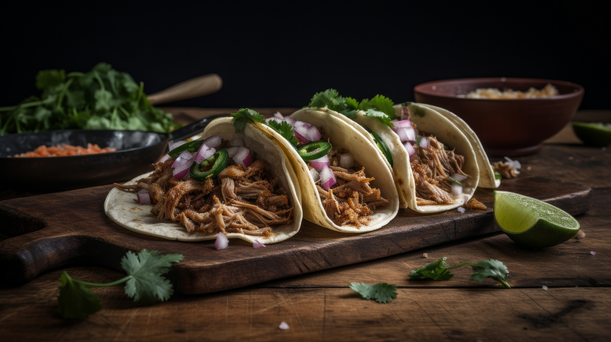
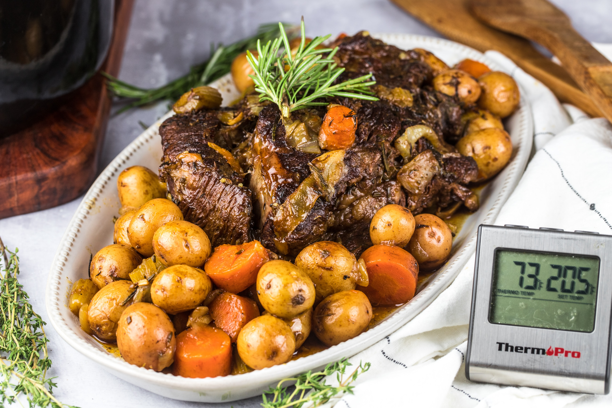
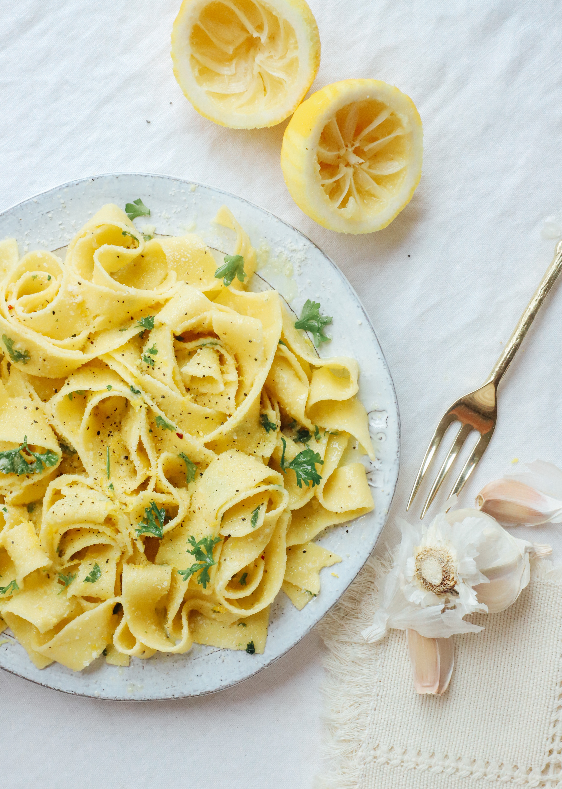
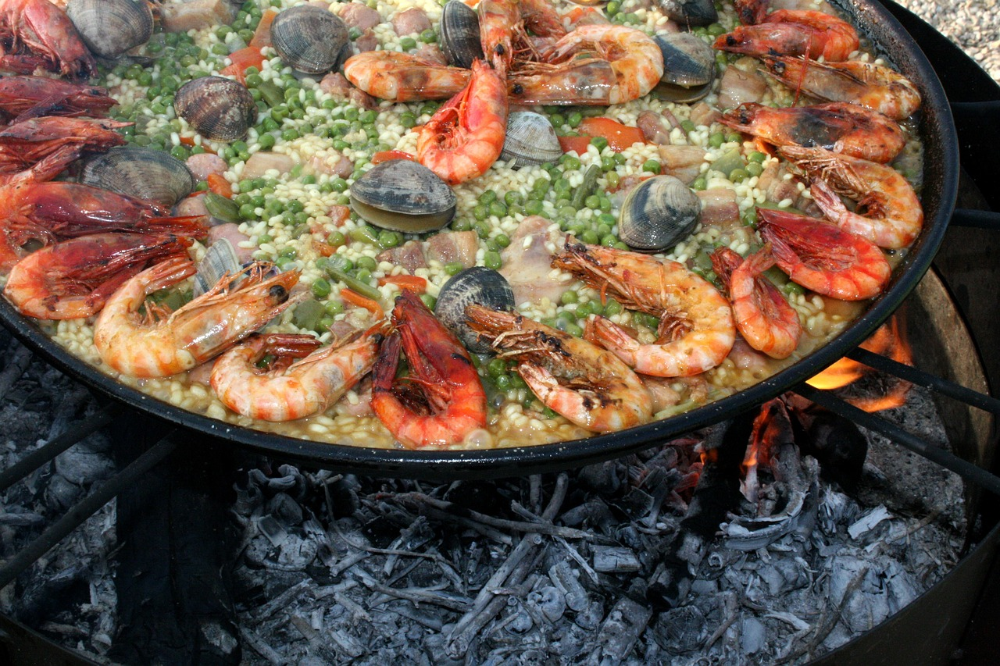

Raze Craze
Appetizers
- American Flavors -
- Buffalo Chicken Wings
- -Classic American hot wings served with celery and your choice of dipping sauce.
- Mozzarella Sticks
- -Crispy and golden, our mozzarella sticks are a favorite with a side of marinara.
- Bruschetta
- -A fresh and flavorful mix of diced tomatoes, basil, and garlic on toasted Italian bread.
- Caprese Skewers
- -Fresh mozzarella, cherry tomatoes, and basil drizzled with balsamic glaze.
- Empanadas
- -Savory turnovers filled with your choice of seasoned beef or chicken.
- Chorizo Queso Fundido
- -Melted cheese with chorizo, served with tortilla chips.
- Italian Delights -
- Latin-Inspired -



Salads
- American Freshness -
- Cobb Salad
- -A hearty mix of lettuce, bacon, avocado, and blue cheese, topped with grilled chicken and a choice of dressing.
- Caesar Salad
- -Romaine lettuce, croutons, and Parmesan cheese with our house-made Caesar dressing.
- Caprese Salad
- -Sliced tomatoes, fresh mozzarella, and basil drizzled with balsamic glaze.
- Panzanella Salad
- -A rustic Italian salad with tomatoes, cucumbers, red onions, and crusty bread.
- Ensalada Verde
- -A light and refreshing salad with mixed greens, avocado, and a zesty lime dressing.
- Taco Salad
- -A crunchy tortilla shell filled with seasoned beef, lettuce, tomatoes, and cheese.
- Italian Greens -
- Latin-Inspired -
- Latin-Inspired -



Sandwiches
- American Favorites -
- Classic BLT
- -Crispy bacon, lettuce, and tomato on toasted bread with mayo.
- Philly Cheesesteak
- - Sliced steak with grilled onions and peppers, topped with melted cheese in a hoagie roll.
- Meatball Sub
- -House-made meatballs smothered in marinara sauce and melted mozzarella cheese.
- Chicken Parmesan
- -Breaded chicken breast with marinara and melted cheese on a sub roll.
- Cuban Sandwich
- -Roasted pork, ham, Swiss cheese, pickles, and mustard on pressed Cuban bread.
- Arepa
- -Cornmeal pockets filled with your choice of seasoned beef, chicken, or black beans.
- Italian Sensations -
- Latin-Inspired -



Classics
- American Classics -
- Meatloaf
- -A homestyle favorite, served with mashed potatoes and gravy.
- BBQ Ribs
- -Fall-off-the-bone tender ribs smothered in BBQ sauce, served with coleslaw and fries.
- Spaghetti Bolognese
- -Spaghetti pasta with a rich and hearty meat sauce, topped with Parmesan cheese.
- Chicken Alfredo
- -Grilled chicken and fettuccine pasta tossed in a creamy Alfredo sauce.
- Ropa Vieja
- -Slow-cooked shredded beef in a flavorful tomato sauce, served with rice and black beans.
- Arroz con Pollo
- -Traditional Latin chicken and rice dish with saffron, vegetables, and olives.
- Italian Specialties -
- Latin-Inspired -



Desserts
- American Sweets -
- Apple Pie
- -A classic American dessert, served with a scoop of vanilla ice cream.
- Chocolate Brownie Sundae
- -Warm brownie topped with ice cream, chocolate sauce, and whipped cream.
- Tiramisu
- -Layers of coffee-soaked ladyfingers and mascarpone cheese, dusted with cocoa.
- Cannoli
- -Crispy pastry shells filled with sweet ricotta and chocolate chips.
- Flan
- -Creamy caramel custard, a Latin dessert favorite.
- Churros
- -Fried dough sticks rolled in cinnamon sugar, served with chocolate dipping sauce.
- Italian Delicacies -
- Latin Flavors -


Family Style Meals
- Meat and Potatoes Feast
- -A generous platter of pot roast, mashed potatoes, gravy, and roasted vegetables.
- Family Pasta Platter
- -Choose your favorite pasta and sauce, served with salad and garlic bread.
- Latin Fiesta
- -Mix and match your favorite Latin dishes for a family-style feast.
Our menu offers a delectable selection of American, Italian, and Latin-inspired dishes, embracing comfort food classics, savory meat and potatoes, delicious pasta dishes, flavorful rice creations, gourmet sandwiches, decadent desserts, and wholesome family meals. We invite you to savor the diverse flavors and traditions that Raze Craze brings to your table.


